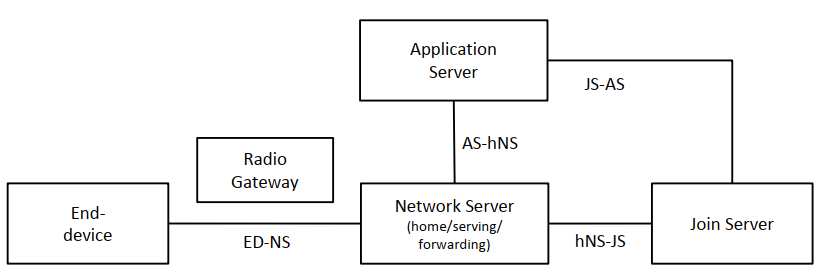
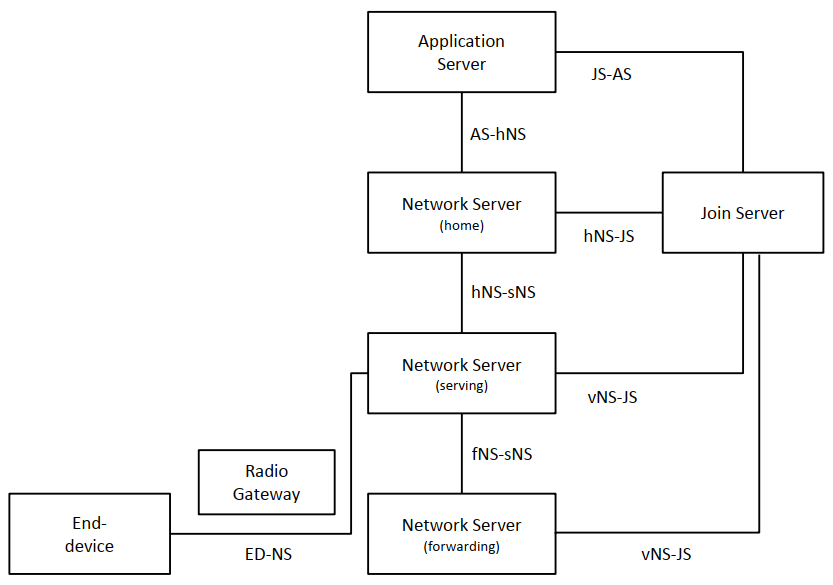

本文为学习 LoRaWAN 后端接口 v1.0 文档时，顺便翻译所得。文档较长，预计分为多篇。
本部分主要介绍网络参考模型。
1. 介绍
这份文档描述了以下服务间的标准接口和数据流：
- 网络服务器（Network Sever）和入网服务器（Join Server）
- 入网服务器（Join Server）和应用服务器（Application Server）
- 漫游流量路由的两个网络服务器（Network Servers)
Network Server 和 Application Server 之间的接口超出本文档范围。
重点关注本文档中描述的 OTAA（Over-the-Air Activation）及单终端漫游时，网络中多实体间信息流。
2. 公约
本文中的关键词（”MUST”, “MUST NOT”, “REQUIRED”, “SHALL”, “SHALL NOT”, “SHOULD”, “SHOULD NOT”, “RECOMMENDED”, “MAY”, 以及 “OPTIONAL”）的解释如 RFC 2119 协议描述。
3. 网络参考模型（Network Reference Model）
LoRaWAN 架构网络参考模型如图 f0, f1 所示：

f0. 固定终端（End-Device at home）

f1. 漫游终端（roaming End-Device）
终端（End-Device）：
终端是传感器或执行器。它是无线方式通过无线网关连入一个 LoRaWAN 网络的。终端的应用层连接到云端特定的 Application Server（简称：AS）。这个终端的所有应用层载荷（payloads）都会路由到响应的 AS。
无线网关（Radio-Gateway）：
无线网关传递所有接收到的 LoRaWAN 无线数据报到 Network Server（简称：NS）,连接使用 IP 端口。无线网关完全工作在物理层。它的职责是简单解码上行无线数据报并将数据报定向到 NS。相对地，下行时，无线网关简单处理（不解析）传递 NS 的请求报文。
网络服务器（Network Server）：
NS 是终端设备连接的网络，终止于 LoRaWAN MAC 层。它是星型拓扑的中心。
NS 的一般特征：
- 终端地址检查
- 帧验证和帧计数检查
- 确认（Acknowledgments）
- 数据速率适应
- 响应终端设备的所有 MAC 层请求
- 传递上行应用数据到合适的 AS
- 将任何 AS 的下行消息排队到连接上网络的任何终端
- 在终端和 Join Servers 之间传递 Join-request（入网请求） 和 Join-accept（入网确认）
在漫游架构中，一个 NS 可能扮演三个不同的角色，这取决于终端是否处于漫游场景以及涉及的漫游类型。
Serving NS（简称：sNS）控制终端的 MAC 层。
Home NS （简称：hNS）是设备配置（Device Profile)、服务配置（Service Profile）、路由配置（Routing Profile）存储的位置。hNS 将用于入网过程中直接关联 Join Server。它连接到 AS。如果 hNS 和 sNS 分离，他们遵循漫游协议。上下行数据报在 sNS 和 hNS 间传递。
Forwarding NS（简称：fNS）管理着无线网关。当 sNS 和 fNS 分离，他们遵循漫游协议。将有一个或多个 fNS 服务于终端设备。上下行数据报在 fNS 和 sNS 间传递。
入网服务器（Join Server）：
Join Server（简称：JS）处理终端设备的 OTA（Over-the-Air）激活流程。可能有许多 JS 连接到一个 NS，且一个 JS 可能连接多个 NS。
终端设备通过 Join-request 消息中的 JoinEUI 字段发信号通知 JS。每个 JS 被唯一 JoinEUI 值标识。（注意：AppEUI 存在于 LoRaWAN1.0/1.0.2（LW10，LW102） 的 Join-request 中，被重命名未 LoRaWAN1.1（LW11） 中的 JoinEUI 。术语 JoinEUI 被用于指代该规范中 LW10/LW102 终端设备上下文中的 AppEUI 。
JS 知道终端设备的 hNS 标识符，并在漫游过程中将所需信息提供给其他 NS。
JS 包含所需信息处理上行入网请求帧并且生成下行入网确认帧。它也执行网络和应用程序会话密钥（session key）的派生。它将终端设备的网络密钥传送到 NS ，将应用会话密钥传送给相应的应用服务器。
为此，JS 应该（SHALL）包含其控制下的每个终端设备的如下信息：
- DevEUI
- AppKey
- NwkKey（仅适用于 LW11 终端设备）
- hNS 标识
- AS 标识
- 一种首选网络的方法，以防多个网络可以为终端提供服务
- 终端设备 LoRaWAN 版本（LoRaWAN 1.0，1.0.2 或 1.1）
根密钥（root key） NwkKey 和 AppKey 仅可用于 JS 和终端设备，他们不会被发送到 NS 或 AS 。
安全配置（secure provisioning），存储和使用根密钥 NwkKey 和 AppKey 在终端设备和后端是解决方案整体安全性的内在要素。这些留待实施且超出本文档的范畴。然而，该解决方案可包括 SE （Secure Elements 安全要素） 和 HSM （Hardware Security Modules 硬件安全模块）。
这些信息实际如何编程到 JS 中超出本文档范围，可能因 JS 而异。这可以通过例如门户网站或者一组 API 来实现。
JS 和 NS 应该（SHALL）应该能够建立安全通信，提供端点身份验证（end-point authentication），完整性（integrity）和重放保护（replay protection）以及机密性（confidentiality）。JS 还应该（SHALL）能够安全地传递应用会话密钥（AppSKey）给 AS 。
JS 可以连接到多个 AS，一个 AS 可以连接到多个 JS 。
JS 和 AS 应该（SHALL）能建立安全通信，提供端点身份验证（end-point authentication），完整性（integrity）和重放保护（replay protection）以及机密性（confidentiality）。
应用服务器（Application Server）：
AS 处理相关终端设备地所有应用层有效负载（payload），并为最终用户提供应用级服务。它还为连接的终端设备生成所有应用层下行链路有效载荷。
可以有多个 AS 连接到一个 NS ，也可以一个 AS 连接到许多 NS（例如通过多层网络操作终端）。一个 AS 也可以连接多个 JS 。
hNS 基于 DevEUI 路由上行链路到合适的 AS 。
除了前述的网络元素外，LoRaWAN 架构还在这些实体间定义了以下网络接口：
hNS-JS：此接口用于支持 JS 和 NS 之间的入网（激活）过程。
vNS-JS：此接口用于漫游激活过程。它用于检索于终端设备关联的 hNS 和 NetID 。
ED-NS：此接口用于支持终端设备和 NS 之间的 LoRaWAN MAC 层信令和有效载荷传送。
AS-hNS：此接口用于支持应用程序有效载荷的传送以及在 AS 和 NS 之间关联元数据（meta-data）。
hNS-sNS：此接口用于支持 hNS 和 sNS 之间的漫游信令和有效载荷传递。
sNS-fNS：此接口用于支持 sNS 和 fNS 之间的漫游信令和有效载荷传递。
AS-JS：此接口用于将应用会话密钥（AppSKey）从 JS 传送到 AS 。